Project Name
Referto
Referto
Field Editorial
Year 2024
A referto is a clinical report written by a doctor, sealing on paper his view of the patient and the
disease. Similarly, “Referto” is the most real, human and emotional account of health life; delivered
directly to us from the hands of those who dedicate themselves completely to the protection of our
health
every day.
Referto is a small magazine, born with the desire to be read. It is a totally content-driven project, and is so to make the most of the personal stories it contains in its pages.
every day.
Referto is a small magazine, born with the desire to be read. It is a totally content-driven project, and is so to make the most of the personal stories it contains in its pages.
Skills
 Creative direction
Creative direction
Layout design
Format: 160 x 250 mm
Number of pages: 272
Cover: Plike white 330g
Inner pages: Arena Extra White 90g
Insert: Matt coated 150g
Binding: Swiss binding
Number of pages: 272
Cover: Plike white 330g
Inner pages: Arena Extra White 90g
Insert: Matt coated 150g
Binding: Swiss binding

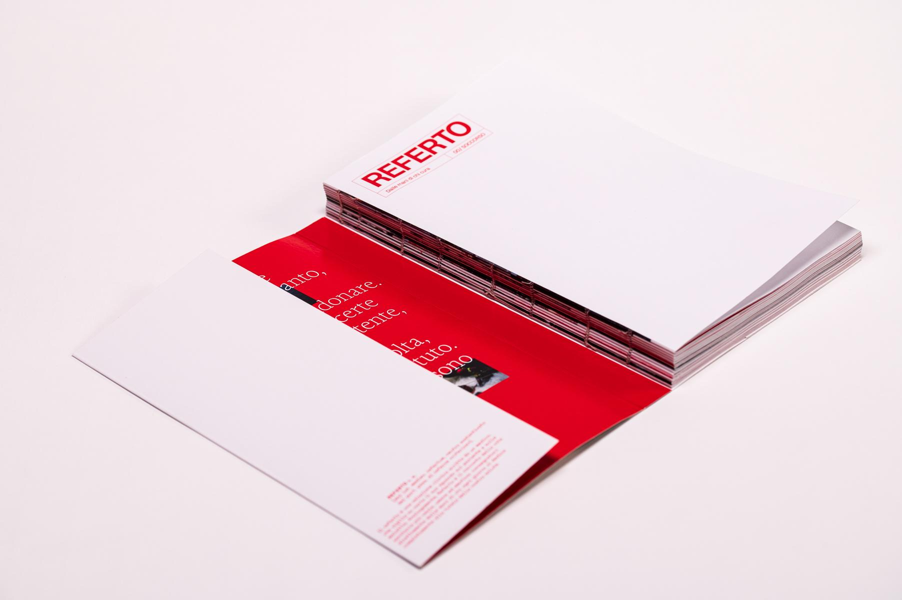
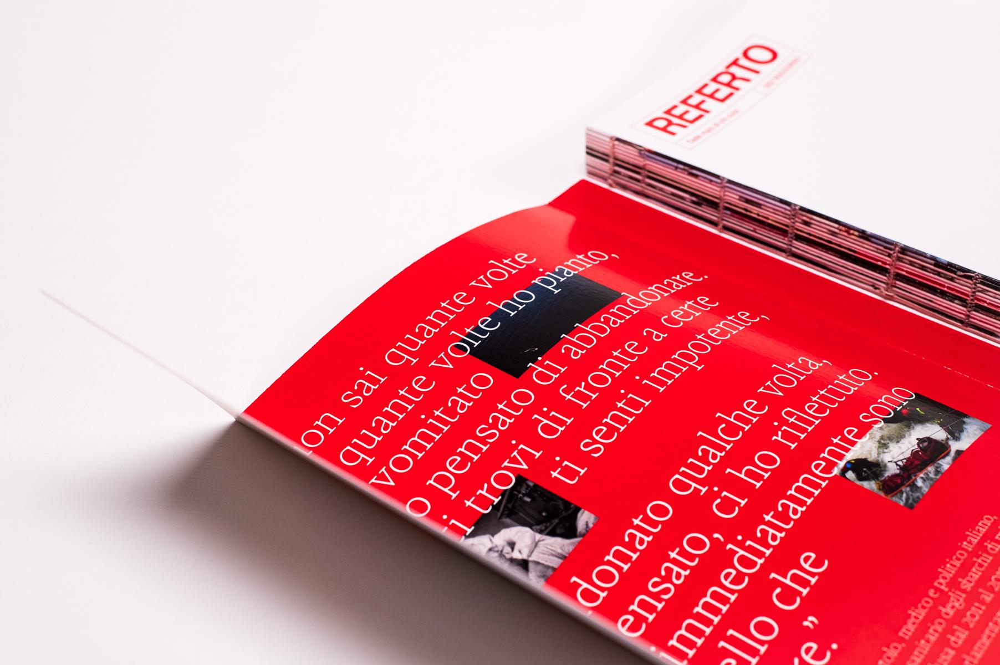
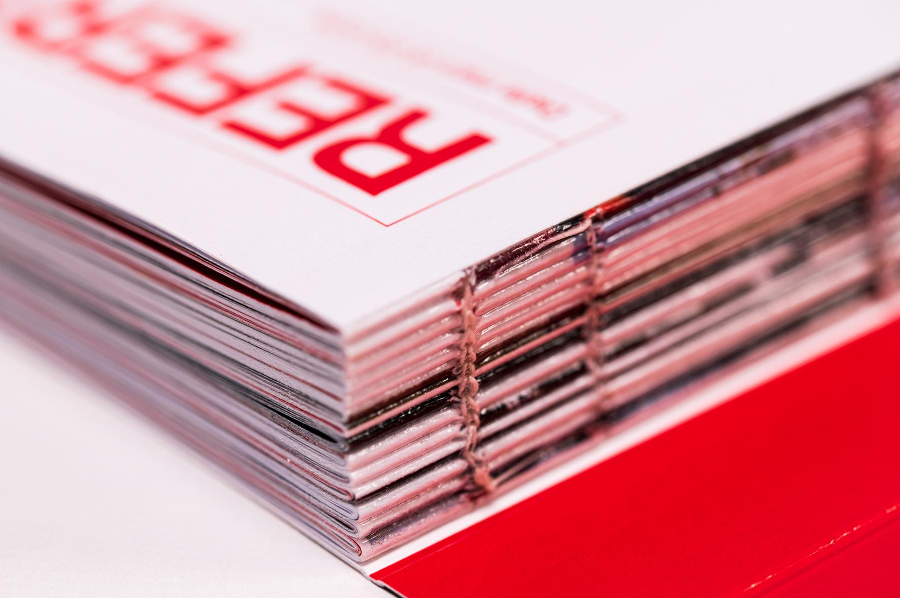
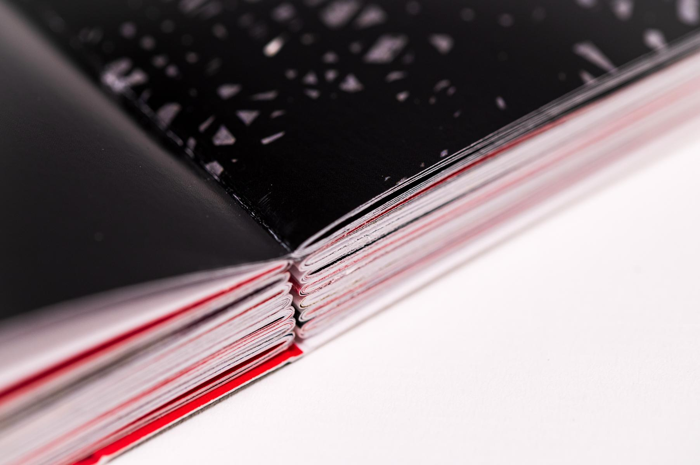
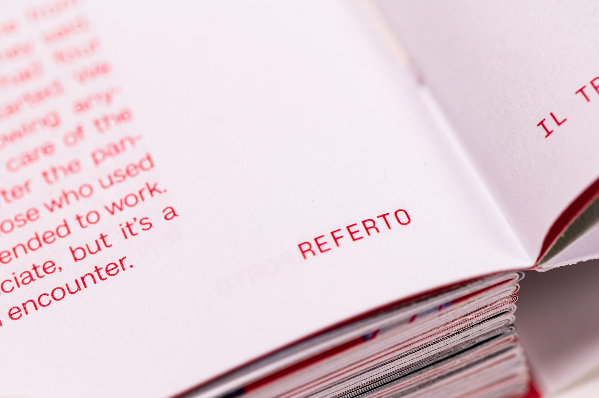
Spread pages
The journal is organized into 5 chapters, each related to a specific phase of rescue procedures: waiting,
calling, survey, rescue, and transport. Each of these chapters contains stories, interviews and articles
from experts in the field and workers.
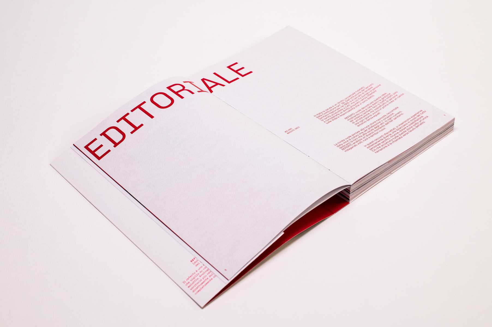
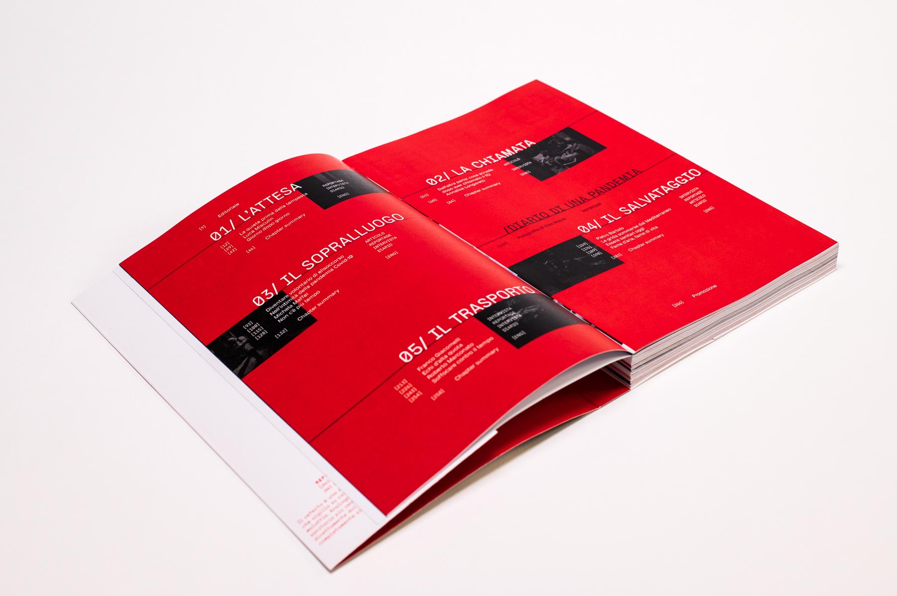
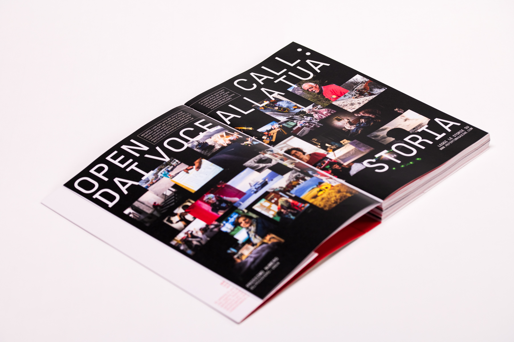

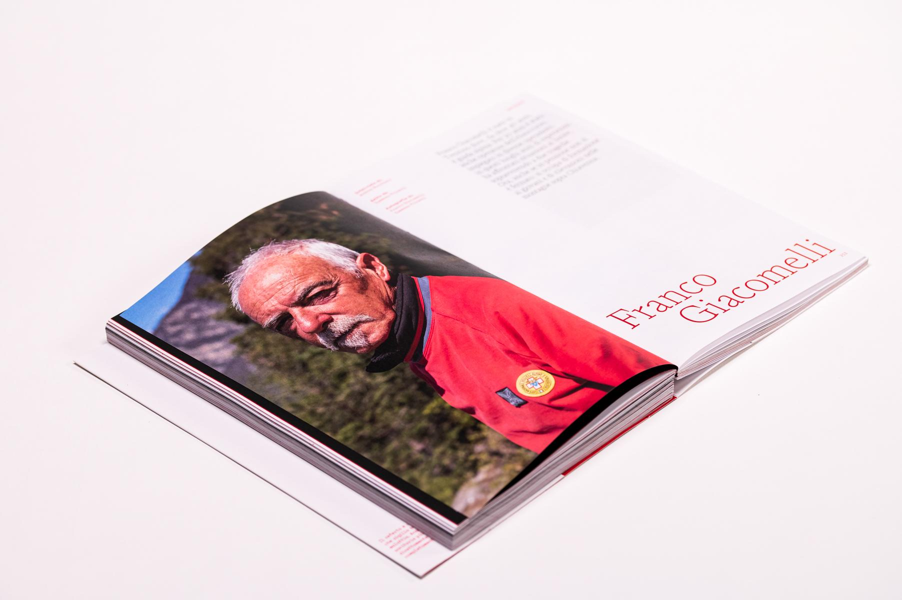
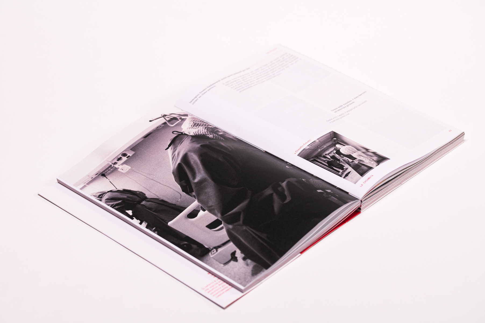
“Every day there is some person who is not feeling well, to be visited and treated. We try our best to
keep it quiet; but basically we are normal people.”
- Davide Orcese
- Davide Orcese
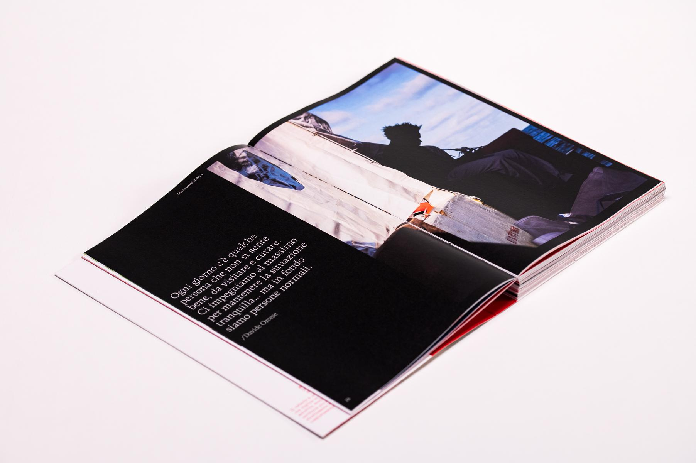
Diary of a Pandemic
“I was working on a new chapter of my SCENE project in Reggio Emilia when the epidemic started in late
February.
So, there I took the first shots. Then, I imagined a long journey through Italy during this modern plague, from Palermo to the Slovenian border via Bergamo. The result is a fragment in conflict between the event itself and the epic of images that we carry in us as a historical-religious reference.”
- Alex Majoli
So, there I took the first shots. Then, I imagined a long journey through Italy during this modern plague, from Palermo to the Slovenian border via Bergamo. The result is a fragment in conflict between the event itself and the epic of images that we carry in us as a historical-religious reference.”
- Alex Majoli

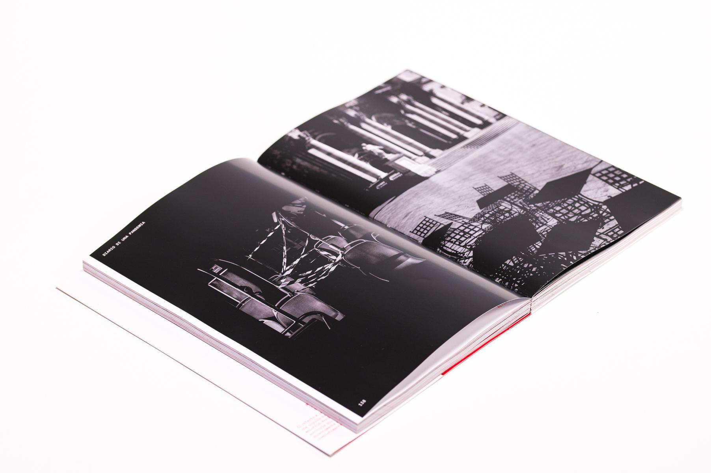
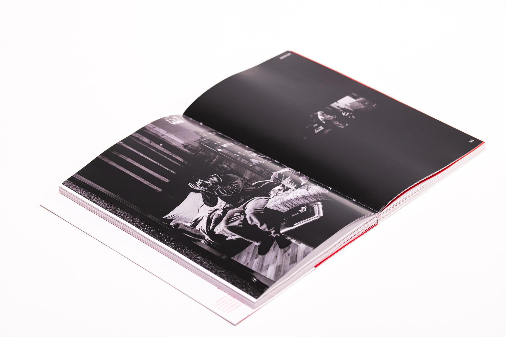
Data Visualization
Parallel to the interviews and excerpts of human and personal stories, the magazine offers informative
content capable of contextualizing the difficulties recounted. To this end, infographics related to
various themes have been developed and included.
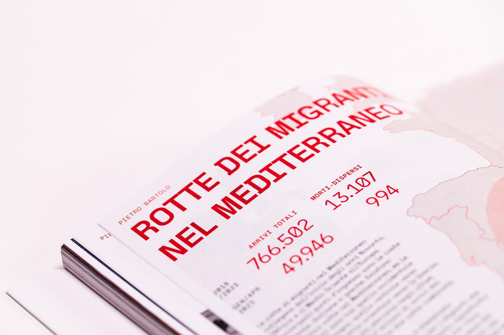
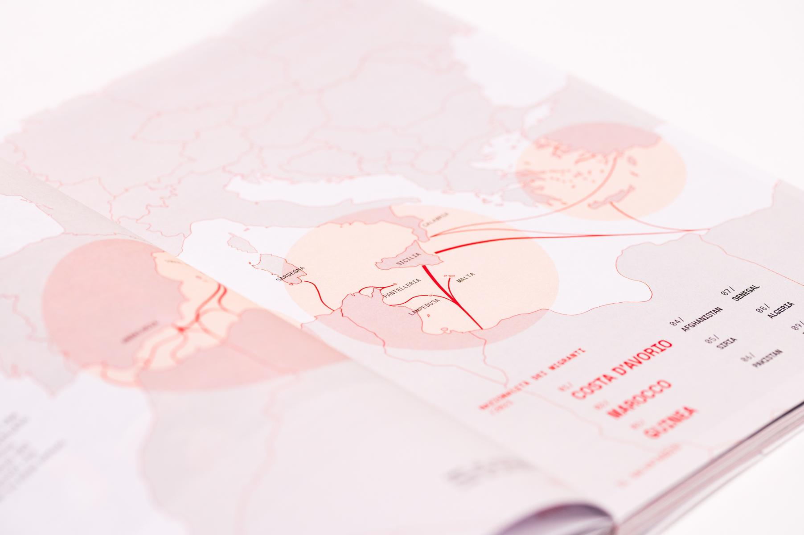
Produced during the master's degree in communication design at the Politecnico di Milano.
Group project carried out with: Bonfanti Sofia, Ceriani Edoardo, Clericetti Giovanni and Prinetti Tommaso
Group project carried out with: Bonfanti Sofia, Ceriani Edoardo, Clericetti Giovanni and Prinetti Tommaso
Spring 2024